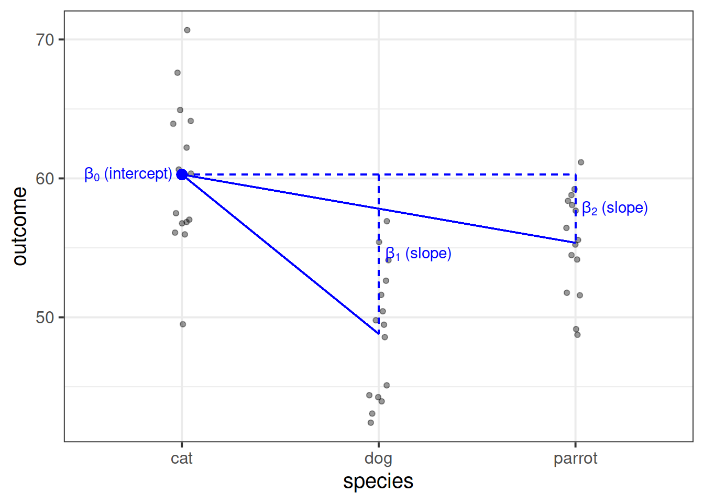

Linear Regression
This lab is a long one! It takes us quite slowly through simple and multiple regression, but the broader ideas being introduced a actually quite simple - we are just drawing a straight line through some datapoints!
Try to take regular breaks during these exercises. This will help (a bit) with not getting overwhelmed - these things (both the statistics side and the programming side) take time - and repeated practice - to sink in.

Simple regression
Let’s imagine a study into income disparity for workers in a local authority. We might carry out interviews and find that there is a link between the level of education and an employee’s income. Those with more formal education seem to be better paid. Now we wouldn’t have time to interview everyone who works for the local authority so we would have to interview a sample, say 10%.
In this lab we will use the riverview data (available at https://uoepsy.github.io/data/riverview.csv) to examine whether education level is related to income among the employees working for the city of Riverview, a hypothetical midwestern city in the US.
Load the required libraries and import the riverview data into a variable named riverview.
Exploring the data
We first want to visualise and describe the marginal distributions (the distribution of each variable without reference to the values of the other variables) of employee incomes and education levels.
- You could use, for example,
geom_density()for a density plot orgeom_histogram()for a histogram. - Look at the shape, centre and spread of the distribution. Is it symmetric or skewed? Is it unimodal or bimodal?
- Do you notice any extreme observations?


After examining the marginal distributions of the variables of interest in the analysis, we typically move on to examining relationships between the variables.
Visualise and describe the relationship between income and level of education among the employees in the sample.
Think about:
- Direction of association
- Form of association (can it be summarised well with a straight line?)
- Strength of association (how closely do points fall to a recognizable pattern such as a line?)
- Unusual observations that do not fit the pattern of the rest of the observations and which are worth examining in more detail.

Fitting a Linear Model
A note on notation
You will see a variety of different ways of specifying the linear model form in different resources.
Some use \(\beta\), some use \(b\).
In the lectures, you have seen the form \(\color{red}{y} = \color{blue}{b_0 \cdot{} 1 + b_1 \cdot{} x} + \epsilon\).
In the exercises below, we will tend to use \(\color{red}{Y} = \color{blue}{\beta_0 \cdot{} 1 + \beta_1 \cdot{} X} + \epsilon\), to denote our population model, which when fitted on some sample data becomes \(\color{red}{\hat{Y}} = \color{blue}{\hat{\beta}_0 \cdot{} 1 + \hat{\beta_1} \cdot{} X} + \hat{\epsilon}\) (the little hats indicate that they are fitted estimates).
The plot created in the previous question highlights a linear relationship, where the data points are scattered around an underlying linear pattern with a roughly-constant spread as x varies.
We will try to fit a simple (one \(x\) variable only) linear regression model:
\[ Income = \beta_0 + \beta_1 \ Education + \epsilon \quad \\ \text{where} \quad \epsilon \sim N(0, \sigma) \text{ independently} \]
where “\(\epsilon \sim N(0, \sigma) \text{ independently}\)” means that the errors around the line have mean zero and constant spread as x varies.
Fit the linear model to the sample data using the lm() function and assign it to a name to store it in your environment
Hint:
The syntax of the lm() function is:
lm(<response variable> ~ 1 + <explanatory variable>, data = <dataframe>)
Interpreting coefficients
Interpret the estimated intercept and slope in the context of the question of interest.
Let’s suppose we assigned our linear model object to the name “model1” in R. To obtain the estimated regression coefficients we can use it’s name in various ways and with various functions.
- type
model1, i.e. simply invoke the name of the fitted model; - type
model1$coefficients; - use the
coef(model1)function; - use the
coefficients(model1)function; - use the
summary(model1)function and look under the “Estimate” column.
The estimated parameters returned by the above methods are all equivalent. However, summary() returns more information and you need to look under the column “Estimate.”
The parameter estimates from our simple linear regression model take the form of a line, representing the systematic part of our model \(\beta_0 + \beta_1 \ x\), which in our case is \(11.32 + 2.65 \ Education\). Deviations from the line are determined by the random error component \(\hat \epsilon\) (the red lines in Figure 4 below).

Figure 4: Simple linear regression model, with systematic part of the model in blue and residuals in red
Interpreting \(\sigma\)
Consider the following:
- In fitting a linear regression model, we make the assumption that the errors around the line are normally distributed around zero (this is the \(\epsilon \sim N(0, \sigma)\) bit.)
- About 95% of values from a normal distribution fall within two standard deviations of the centre.
We can obtain the estimated standard deviation of the errors (\(\hat \sigma\)) from the fitted model using sigma() and giving it the name of our model.
What does this tell us?
Fitted and predicted values
To compute the model-predicted values for the data in the sample using various functions. Again, if our model object is named “model1” in our environment, we can use:
predict(model1)fitted(model1)fitted.values(model1)model1$fitted.values
predict(model1)## 1 2 3 4 5 6 7 8
## 32.53175 32.53175 37.83435 37.83435 37.83435 43.13694 43.13694 43.13694
## 9 10 11 12 13 14 15 16
## 43.13694 48.43953 48.43953 48.43953 51.09083 53.74212 53.74212 53.74212
## 17 18 19 20 21 22 23 24
## 53.74212 53.74212 56.39342 59.04472 59.04472 61.69601 61.69601 64.34731
## 25 26 27 28 29 30 31 32
## 64.34731 64.34731 64.34731 66.99861 66.99861 69.64990 69.64990 74.95250To compute model-predicted values for other data:
predict(<fitted model>, newdata = <dataframe>)
# make a tibble/dataframe with values for the predictor:
education_query <- tibble(education = c(11, 18))
# model predicted values of income, for the values of education
# inside the "education_query" data
predict(model1, newdata = education_query)## 1 2
## 40.48564 59.04472Compute the model-predicted income for someone with 1 year of education.
Inference for regression coefficients
To quantify the amount of uncertainty in each estimated coefficient that is due to sampling variability, we use the standard error (SE) of the coefficient. Recall that a standard error gives a numerical answer to the question of how variable a statistic will be because of random sampling.
The standard errors are found in the column “Std. Error” of the summary() of a model:
## Estimate Std. Error t value Pr(>|t|)
## (Intercept) 11.321379 6.1232350 1.848921 7.434602e-02
## education 2.651297 0.3696232 7.172972 5.562116e-08In this example the slope, 2.651, has a standard error of 0.37. One way to envision this is as a distribution. Our best guess (mean) for the slope parameter is 2.651. The standard deviation of this distribution is 0.37, which indicates the precision (uncertainty) of our estimate.
Figure 5: Sampling distribution of the slope coefficient. The distribution is approximately bell-shaped with a mean of 2.651 and a standard error of 0.37.
We can perform a test against the null hypothesis that the estimate is zero. Our test statistic:
The reference distribution in this case is a t-distribution with \(n-2\) degrees of freedom, where \(n\) is the sample size, and our test statistic is:
\[
t = \frac{\hat \beta_1 - 0}{SE(\hat \beta_1)}
\]
Test the hypothesis that the population slope is zero — that is, that there is no linear association between income and education level in the population.
(Hint: you can find all the necessary information in summary() of your model)
Model evaluation
Partitioning variation: \(R^2\)
We might ask ourselves if the model is useful. To quantify and assess model utility, we split the total variability of the response into two terms: the variability explained by the model plus the variability left unexplained in the residuals.
\[ \text{total variability in response = variability explained by model + unexplained variability in residuals} \]
Each term is quantified by a sum of squares:
\[ \begin{aligned} SS_{Total} &= SS_{Model} + SS_{Residual} \\ \sum_{i=1}^n (y_i - \bar y)^2 &= \sum_{i=1}^n (\hat y_i - \bar y)^2 + \sum_{i=1}^n (y_i - \hat y_i)^2 \\ \quad \\ \text{Where:} \\ y_i = \text{observed value} \\ \bar{y} = \text{mean} \\ \hat{y}_i = \text{model predicted value} \\ \end{aligned} \]
The R-squared coefficient is defined as the proportion of the total variability in the outcome variable which is explained by our model:
\[
R^2 = \frac{SS_{Model}}{SS_{Total}} = 1 - \frac{SS_{Residual}}{SS_{Total}}
\]
What is the proportion of the total variability in incomes explained by the linear relationship with education level?
Hint: The question asks to compute the value of \(R^2\), but you might be able to find it already computed somewhere.
Testing Model Utility: \(F\) Statistic
To test if the model is useful — that is, if the explanatory variable is a useful predictor of the response — we test the following hypotheses:
\[ \begin{aligned} H_0 &: \text{the model is ineffective, } \beta_1 = 0 \\ H_1 &: \text{the model is effective, } \beta_1 \neq 0 \end{aligned} \] The relevant test-statistic is the F-statistic:
\[ \begin{split} F = \frac{MS_{Model}}{MS_{Residual}} = \frac{SS_{Model} / 1}{SS_{Residual} / (n-2)} \end{split} \]
which compares the amount of variation in the response explained by the model to the amount of variation left unexplained in the residuals.
The sample F-statistic is compared to an F-distribution with \(df_{1} = 1\) and \(df_{2} = n - 2\) degrees of freedom.1
Look at the output of summary() of your model. Identify the relevant information to conduct an F-test against the null hypothesis that the model is ineffective at predicting income using education level.
Binary predictors
Let’s suppose that instead of having measured education in years, we had data instead on “Obtained College Degree: Yes/No.” Our explanatory variable would be binary categorical (think back to our discussion of types of data).
Let us pretend that everyone with >18 years of education has a college degree:
riverview <-
riverview %>%
mutate(
degree = ifelse(education > 18, "Yes", "No")
)We may then plot our relationship as a boxplot. If you want to see the individual points, you could always “jitter” them (right-hand plot below)
ggplot(riverview, aes(x = degree, y = income)) +
geom_boxplot() +
ggplot(riverview, aes(x = degree, y = income)) +
geom_jitter(height=0, width=.05)
Binary predictors in linear regression
We can include categorical predictors in a linear regression, but the interpretation of the coefficients is very specific. Whereas we talked about coefficients being interpreted as “the change in \(y\) associated with a 1-unit increase in \(x\),” for categorical explanatory variables, coefficients can be considered to examine differences in group means. However, they are actually doing exactly the same thing - the model is simply translating the levels (like “Yes”/“No”) in to 0s and 1s!
So while we may have in our dataframe a categorical predictor like the middle column “degree,” below, what is inputted into our model is more like the third column, “isYes.”
## # A tibble: 32 × 3
## income degree isYes
## <dbl> <chr> <dbl>
## 1 50.3 No 0
## 2 32.6 No 0
## 3 65.1 Yes 1
## 4 54.7 Yes 1
## 5 56.0 Yes 1
## 6 38.6 No 0
## 7 60.1 No 0
## 8 61.6 Yes 1
## 9 34.2 No 0
## 10 70.0 Yes 1
## # … with 22 more rowsOur coefficients are just the same as before. The intercept is where our predictor equals zero, and the slope is the change in our outcome variable associated with a 1-unit change in our predictor.
However, “zero” for this predictor variable now corresponds to a whole level. This is known as the “reference level.” Accordingly, the 1-unit change in our predictor (the move from “zero” to “one”) corresponds to the difference between the two levels.

–

Multiple Regression
In this next block of exercises, we move from the simple linear regression model (one outcome variable, one explanatory variable) to the multiple regression model (one outcome variable, multiple explanatory variables).
Everything we just learned about simple linear regression can be extended (with minor modification) to the multiple regression model. The key conceptual difference is that for simple linear regression we think of the distribution of errors at some fixed value of the explanatory variable, and for multiple linear regression, we think about the distribution of errors at fixed set of values for all our explanatory variables.
~ Numeric + Numeric
Research question
Reseachers are interested in the relationship between psychological wellbeing and time spent outdoors.
The researchers know that other aspects of peoples’ lifestyles such as how much social interaction they have can influence their mental well-being. They would like to study whether there is a relationship between well-being and time spent outdoors after taking into account the relationship between well-being and social interactions.
Create a new section heading in your RMarkdown document for the multiple regression exercises.
Import the wellbeing data into R. Assign them to a object called mwdata.
Produce plots of the marginal distributions (the distributions of each variable in the analysis without reference to the other variables) of the wellbeing, outdoor_time, and social_int variables.
Produce plots of the marginal relationships between the outcome variable (wellbeing) and each of the explanatory variables.

Produce a correlation matrix of the variables which are to be used in the analysis, and write a short paragraph describing the relationships.
Correlation matrix
A table showing the correlation coefficients - \(r_{(x,y)}=\frac{\mathrm{cov}(x,y)}{s_xs_y}\) - between variables. Each cell in the table shows the relationship between two variables. The diagonals show the correlation of a variable with itself (and are therefore always equal to 1).
We can create a correlation matrix easily by giving the cor() function a dataframe. However, we only want to give it 3 columns here. Think about how we select specific columns, either using select(), or giving the column numbers inside [].
Model formula
For multiple linear regression, the model formula is an extension of the one predictor (“simple”) regression model, to include any number of predictors:
\[
y = \beta_0 \ + \ \beta_1 x_1 \ + \ \beta_2 x_2 \ + \ ... \ + \beta_k x_k \ + \ \epsilon \\
\quad \\
\text{where} \quad \epsilon \sim N(0, \sigma) \text{ independently}
\]
In the model specified above,
- \(\mu_{y|x_1, x_2, ..., x_k} = \beta_0 + \beta_1 x + \beta_2 x_2 + ... \beta_k x_k\) represents the systematic part of the model giving the mean of \(y\) at each combination of values of variables \(x_1\)-\(x_k\);
- \(\epsilon\) represents the error (deviation) from that mean, and the errors are independent from one another.
Visual
Note that for simple linear regression we talked about our model as a line in 2 dimensions: the systematic part \(\beta_0 + \beta_1 x\) defined a line for \(\mu_y\) across the possible values of \(x\), with \(\epsilon\) as the random deviations from that line. But in multiple regression we have more than two variables making up our model.
In this particular case of three variables (one outcome + two explanatory), we can think of our model as a regression surface (See Figure 8). The systematic part of our model defines the surface across a range of possible values of both \(x_1\) and \(x_2\). Deviations from the surface are determined by the random error component, \(\hat \epsilon\).

Figure 8: Regression surface for wellbeing ~ outdoor_time + social_int, from two different angles
Don’t worry about trying to figure out how to visualise it if we had any more explanatory variables! We can only concieve of 3 spatial dimensions. One could imagine this surface changing over time, which would bring in a 4th dimension, but beyond that, it’s not worth trying!.
The scatterplots we created in an earlier exercise show moderate, positive, and linear relationships both between outdoor time and wellbeing, and between numbers of social interactions and wellbeing.
In R, using lm(), fit the linear model specified by the formula below, assigning the output to a name to store it in your environment.
\[ Wellbeing = \beta_0 \ + \ \beta_1 \cdot Outdoor Time \ + \ \beta_2 \cdot Social Interactions \ + \ \epsilon \]
Tip:
As we did for simple linear regression, we can fit our multiple regression model using the lm() function. We can add as many explanatory variables as we like, separating them with a +.
lm( <response variable> ~ 1 + <explanatory variable 1> + <explanatory variable 2> + ... , data = <dataframe>)
Interpretation of Muliple Regression Coefficients
The parameters of a multiple regression model are:
- \(\beta_0\) (The intercept);
- \(\beta_1\) (The slope across values of \(x_1\));
- …
- …
- \(\beta_k\) (The slope across values of \(x_k\));
- \(\sigma\) (The standard deviation of the errors).
You’ll hear a lot of different ways that people explain multiple regression coefficients.
For the model \(y = \beta_0 + \beta_1 x_1 + \beta_2 x_2 + \epsilon\), the estimate \(\hat \beta_1\) will often be reported as:
the increase in \(y\) for a one unit increase in \(x_1\) when…
- holding the effect of \(x_2\) constant.
- controlling for differences in \(x_2\).
- partialling out the effects of \(x_2\).
- holding \(x_2\) equal.
- accounting for effects of \(x_2\).
## Estimate Std. Error t value Pr(>|t|)
## (Intercept) 5.3703775 4.3205141 1.242995 2.238259e-01
## outdoor_time 0.5923673 0.1689445 3.506284 1.499467e-03
## social_int 1.8034489 0.2690982 6.701825 2.369845e-07The coefficient 0.59 of weekly outdoor time for predicting wellbeing score says that among those with the same number of social interactions per week, those who have one additional hour of outdoor time tend to, on average, score 0.59 higher on the WEMWBS wellbeing scale. The multiple regression coefficient measures that average conditional relationship.
Just like the simple linear regression, when we estimate parameters from the available data, we have:
- A fitted model (recall that the h\(\hat{\textrm{a}}\)ts are used to distinguish our estimates from the true unknown parameters): \[ \widehat{Wellbeing} = \hat \beta_0 + \hat \beta_1 \cdot Outdoor Time + \hat \beta_2 \cdot Social Interactions \]
- And we have the residuals \(\hat \epsilon = y - \hat y\) which are the deviations from the observed values and our model-predicted responses.
- Extract and interpret the parameter estimates (the “coefficients”) from your model.
(summary(),coef(),$coefficientsetc will be useful here)
- Within what distance from the model predicted values (the regression surface) would we expect 95% of WEMWBS wellbeing scores to be?
(Either
sigma()or part of the output fromsummary()will help you for this)
Obtain 95% confidence intervals for the regression coefficients, and write a sentence describing each.
In last week’s exercises, we extended the simple linear regression model to multiple regression (one outcome variable, multiple explanatory variables). Specifically, we looked at the case of when we had multiple numeric (or ‘continuous’) explanatory variables.
We’re now going to start by taking a look at a model with a mix of numeric and categorical explanatory variables.
~ Numeric + Categorical
Suppose that the group of researchers were instead wanting to study the relationship between well-being and time spent outdoors after taking into account the relationship between well-being and having a routine.
Note that in the dataset, ‘having a routine’ is categorical (participants either do, or don’t have a routine). So let’s go over the modelling process again, but paying careful attention to where and how the process differs when we have a categorical predictor.
We have already visualised the marginal distribution of weekly outdoor time in questions last week, as well as its relationship with wellbeing scores.
Read in the wellbeing data (https://uoepsy.github.io/data/wellbeing.csv) and produce visualisations of:
- the distribution of the
routinevariable - the relationship between
routineandwellbeing.
Note: We cannot visualise the distribution of routine as a density curve or boxplot, because it is a categorical variable (observations can only take one of a set of discrete response values).

Fit the multiple regression model below using lm(), and assign it to an object to store it in your environment. Examine the summary output of the model.
\[ Wellbeing = \beta_0 + \beta_1 \cdot OutdoorTime + \beta_2 \cdot Routine + \epsilon \]
\(\hat \beta_0\) (the intercept) is the estimated average wellbeing score associated with zero hours of weekly outdoor time and zero in the routine variable.
What group is the intercept the estimated wellbeing score for when they have zero hours of outdoor time? Why (think about what zero in the routine variable means)?
In the previous example, we had a visualisation of our model as a regression surface.
Here, one of our explanatory variables has only two possible responses. How might we best visualise the model?
- one line
- one surface
- two lines
- two surfaces
- a curved (not flat) surface
Get a pen and paper, and sketch out the plot shown in Figure 11.

Figure 11: Multiple regression model: Wellbeing ~ Outdoor Time + Routine
Annotate your plot with labels for each of parameter estimates from your model:
| Parameter Estimate | Model Coefficient | Estimate |
|---|---|---|
| \(\hat \beta_0\) | (Intercept) |
26.25 |
| \(\hat \beta_1\) | outdoor_time |
0.92 |
| \(\hat \beta_2\) | routineRoutine |
7.29 |

Load the sjPlot package using library(sjPlot) and try running the code below (changing to use the name of your fitted model). You may already have the sjPlot package installed from previous exercises. If not, you will need to install it first.
library(sjPlot)
plot_model(wbmodel2)
plot_model(wbmodel2, type = "pred")
plot_model(wbmodel2, type = "pred", terms=c("outdoor_time","routine"), show.data=TRUE)What do you think each one is showing?
The plot_model function (and the sjPlot package) can do a lot of different things. Most packages in R come with tutorials (or “vignettes”), for instance: https://strengejacke.github.io/sjPlot/articles/plot_model_estimates.html
 These are the parameter estimates (the
These are the parameter estimates (the 
Categorical Predictors with \(k\) levels
We saw that a binary categorical variable gets inputted into our model as a variable of 0s and 1s (these typically get called “dummy variables”).
Dummy variables are numeric variables that represent categorical data.
When we have a categorical explanatory variable with more than 2 levels, our model gets a bit more - it needs not just one, but a number of dummy variables. For a categorical variable with \(k\) levels, we can express it in \(k-1\) dummy variables.
For example, the “species” column below has three levels, and can be expressed by the two variables “species_dog” and “species_parrot”:
## species species_dog species_parrot
## 1 cat 0 0
## 2 cat 0 0
## 3 dog 1 0
## 4 parrot 0 1
## 5 dog 1 0
## 6 cat 0 0
## 7 ... ... ...- The “cat” level is expressed whenever both the “species_dog” and “species_parrot” variables are 0.
- The “dog” level is expressed whenever the “species_dog” variable is 1 and the “species_parrot” variable is 0.
- The “parrot” level is expressed whenever the “species_dog” variable is 0 and the “species_parrot” variable is 1.
R will do all of this re-expression for us. If we include in our model a categorical explanatory variable with 4 different levels, the model will estimate 3 parameters - one for each dummy variable. We can interpret the parameter estimates (the coefficients we obtain using coefficients(),coef() or summary()) as the estimated increase in the outcome variable associated with an increase of one in each dummy variable (holding all other variables equal).
| Estimate | Std. Error | t value | Pr(>|t|) | |
|---|---|---|---|---|
| (Intercept) | 60.28 | 1.209 | 49.86 | 5.273e-39 |
| speciesdog | -11.47 | 1.71 | -6.708 | 3.806e-08 |
| speciesparrot | -4.916 | 1.71 | -2.875 | 0.006319 |
Note that in the above example, an increase in 1 of “species_dog” is the difference between a “cat” and a “dog.” An increase in one of “species_parrot” is the difference between a “cat” and a “parrot.” We think of the “cat” category in this example as the reference level - it is the category against which other categories are compared against.

More Model Evaluation
Adjusted \(R^2\)
We know from our work on simple linear regression that the R-squared can be obtained as: \[ R^2 = \frac{SS_{Model}}{SS_{Total}} = 1 - \frac{SS_{Residual}}{SS_{Total}} \]
However, when we add more and more predictors into a multiple regression model, \(SS_{Residual}\) cannot increase, and may decrease by pure chance alone, even if the predictors are unrelated to the outcome variable. Because \(SS_{Total}\) is constant, the calculation \(1-\frac{SS_{Residual}}{SS_{Total}}\) will increase by chance alone.
An alternative, the Adjusted-\(R^2\), does not necessarily increase with the addition of more explanatory variables, by including a penalty according to the number of explanatory variables in the model. It is not by itself meaningful, but can be useful in determining what predictors to include in a model. \[ Adjusted{-}R^2=1-\frac{(1-R^2)(n-1)}{n-k-1} \\ \quad \\ \begin{align} & \text{Where:} \\ & n = \text{sample size} \\ & k = \text{number of explanatory variables} \\ \end{align} \]
In R, you can view the mutiple and adjusted \(R^2\) at the bottom of the output of summary(<modelname>):

Figure 12: Multiple regression output in R, summary.lm(). R-squared highlighted
F-ratio
As in simple linear regression, the F-ratio is used to test the null hypothesis that all regression slopes are zero.
It is called the F-ratio because it is the ratio of the how much of the variation is explained by the model (per parameter) versus how much of the variation is unexplained (per remaining degrees of freedom).
\[ F_{df_{model},df_{residual}} = \frac{MS_{Model}}{MS_{Residual}} = \frac{SS_{Model}/df_{Model}}{SS_{Residual}/df_{Residual}} \\ \quad \\ \begin{align} & \text{Where:} \\ & df_{model} = k \\ & df_{error} = n-k-1 \\ & n = \text{sample size} \\ & k = \text{number of explanatory variables} \\ \end{align} \]
In R, at the bottom of the output of summary(<modelname>), you can view the F ratio, along with an hypothesis test against the alternative hypothesis that the at least one of the coefficients \(\neq 0\) (under the null hypothesis that all coefficients = 0, the ratio of explained:unexplained variance should be approximately 1):

Figure 13: Multiple regression output in R, summary.lm(). F statistic highlighted
Using the wellbeing data, fit the following model.
- \(\text{Wellbeing} = \beta_0 + \beta_1 \cdot \text{Social Interactions} + \beta_2 \cdot \text{HasRoutine} + \beta_3 \cdot \text{Outdoor Time} + \epsilon\)
Does the model provide a better fit to the data than a model with no explanatory variables? (i.e., test against the alternative hypothesis that at least one of the explanatory variables significantly predicts wellbeing scores).
–

Making Valid Inferences
So far, we have been fitting and interpreting our regression models. In each case, we first specified the model, then visually explored the marginal distributions and relationships of variables which would be used in the analysis. Then, once we fitted the model, we began to examine the fit by studying what the various parameter estimates represented, and the spread of the residuals. We saw these in the output of summary() of a model - they were shown in the parts of the output inside the red boxes in Figure 14).

Figure 14: Multiple regression output in R, summary.lm(). Residuals and Coefficients highlighted

Figure 15: Multiple regression output in R, summary.lm(). Hypothesis tests highlighted
Choose > Fit > Assess > Use
IMPORTANT!
It may help to think of the sequence of steps involved in statistical modeling as:
\[
\text{Choose} \rightarrow \text{Fit} \rightarrow \text{Assess} \rightarrow \text{Use}
\]
- We explore/visualise our data and Choose our model specification.
- Then we Fit the model in R.
- Next, we Assess the fit, to ensure that it meets all the underlying assumptions?
- Finally, we Use our model to draw statistical inferences about the world, or to make predictions.
Assumptions: The broad idea
TODO - exercises
Multicollinearity
For the linear model with multiple explanatory variables, we need to also think about multicollinearity - this is when two (or more) of the predictors in our regression model are moderately or highly correlated.Recall our interpretation of multiple regression coefficients as
This interpretation falls down if predictors are highly correlated because if, e.g., predictors \(x_1\) and \(x_2\) are highly correlated, then changing the value of \(x_1\) necessarily entails a change the value of \(x_2\) meaning that it no longer makes sense to talk about holding \(x_2\) constant.
We can assess multicollinearity using the variance inflation factor (VIF), which for a given predictor \(x_j\) is calculated as:
\[
VIF_j = \frac{1}{1-R_j^2} \\
\]
Where \(R_j^2\) is the coefficient of determination (the R-squared) resulting from a regression of \(x_j\) on to all the other predictors in the model (\(x_j = x_1 + ... x_k + \epsilon\)).
The more highly correlated \(x_j\) is with other predictors, the bigger \(R_j^2\) becomes, and thus the bigger \(VIF_j\) becomes.
The square root of VIF indicates how much the SE of the coefficient has been inflated due to multicollinearity. For example, if the VIF of a predictor variable were 4.6 (\(\sqrt{4.6} = 2.1\)), then the standard error of the coefficient of that predictor is 2.1 times larger than if the predictor had zero correlation with the other predictor variables. Suggested cut-offs for VIF are varied. Some suggest 10, others 5. Define what you will consider an acceptable value prior to calculating it.
In R, the vif() function from the car package will provide VIF values for each predictor in your model.
Calculate the variance inflation factor (VIF) for the predictors in the model.
Write a sentence summarising whether or not you consider multicollinearity to be a problem here.
TODO link to extras assumptions
Individual Case Diagnostics
In linear regression, individual cases in our data can influence our model more than others. There are a variety of measures we can use to evaluate the amount of misfit and influence that single observations have on our model and our model estimates.
TODO there are many ways to make a cake. recipes can be useful, but you really need to think about what ingredients you actually have (what data you have).
don’t have to exclude these observations.
Do not simply blindly follow cut-offs, think carefully about outliers and influential points and whether you want to exclude them
- Regression outliers: A large residual \(\hat \epsilon_i\) - i.e., a big discrepancy between their predicted y-value and their observed y-value.
- Standardised residuals: For residual \(\hat \epsilon_i\), divide by the estimate of the standard deviation of the residuals. In R, the
rstandard()function will give you these - Studentised residuals: For residual \(\hat \epsilon_i\), divide by the estimate of the standard deviation of the residuals excluding case \(i\). In R, the
rstudent()function will give you these. Values \(>|2|\) (greater in magnitude than two) are considered potential outliers.
- Standardised residuals: For residual \(\hat \epsilon_i\), divide by the estimate of the standard deviation of the residuals. In R, the
- High leverage cases: These are cases which have considerable potential to influence the regression model (e.g., cases with an unusual combination of predictor values).
- Hat values: are used to assess leverage. In R, The
hatvalues()function will retrieve these.
Hat values of more than \(2 \bar{h}\) (2 times the average hat value) are considered high leverage. \(\bar{h}\) is calculated as \(\frac{k + 1}{n}\), where \(k\) is the number of predictors, and \(n\) is the sample size.
- Hat values: are used to assess leverage. In R, The
- High influence cases: When a case has high leverage and is an outlier, it will have a large influence on the regression model.
- Cook’s Distance: combines leverage (hatvalues) with outlying-ness to capture influence. In R, the
cooks.distance()function will provide these.
There are many suggested Cook’s Distance cut-offs.
- Cook’s Distance: combines leverage (hatvalues) with outlying-ness to capture influence. In R, the
Create a new tibble which contains:
- The original variables from the model (Hint, what does
<fitted model>$modelgive you?) - The fitted values from the model \(\hat y\)
- The residuals \(\hat epsilon\)
- The studentised residuals
- The hat values
- The Cook’s Distance values.
Looking at the studentised residuals, are there any outliers?
Looking at the hat values, are there any observations with high leverage?
Plot the Cook’s Distance values, does it look like there may be any highly influential points?
(You can use plot(model, which = 4) and plot(model, which = 5)).

Other influence.measures()
Alongside Cook’s Distance, we can examine the extent to which model estimates and predictions are affected when an entire case is dropped from the dataset and the model is refitted.
- DFFit: the change in the predicted value at the \(i^{th}\) observation with and without the \(i^{th}\) observation is included in the regression.
- DFbeta: the change in a specific coefficient with and without the \(i^{th}\) observation is included in the regression.
- DFbetas: the change in a specific coefficient divided by the standard error, with and without the \(i^{th}\) observation is included in the regression.
- COVRATIO: measures the effect of an observation on the covariance matrix of the parameter estimates. In simpler terms, it captures an observation’s influence on standard errors. Values which are \(>1+\frac{3(k+1)}{n}\) or \(<1-\frac{3(k+1)}{n}\) are considered as having strong influence.
Use the function influence.measures() to extract these delete-1 measures of influence.
Try plotting the distributions of some of these measures.
Tip: the function influence.measures() returns an infl-type object. To plot this, we need to find a way to extract the actual numbers from it.
What do you think names(influence.measures(<fitted model>)) shows you? How can we use influence.measures(<fitted model>)$ ???? to extract the matrix of numbers?

\(SS_{Total}\) has \(n - 1\) degrees of freedom as one degree of freedom is lost in estimating the population mean with the sample mean \(\bar{y}\). \(SS_{Residual}\) has \(n - 2\) degrees of freedom. There are \(n\) residuals, but two degrees of freedom are lost in estimating the intercept and slope of the line used to obtain the \(\hat y_i\)s. Hence, by difference, \(SS_{Model}\) has \(n - 1 - (n - 2) = 1\) degree of freedom.↩︎

This workbook was written by Josiah King, Umberto Noe, and Martin Corley, and is licensed under a Creative Commons Attribution 4.0 International License.